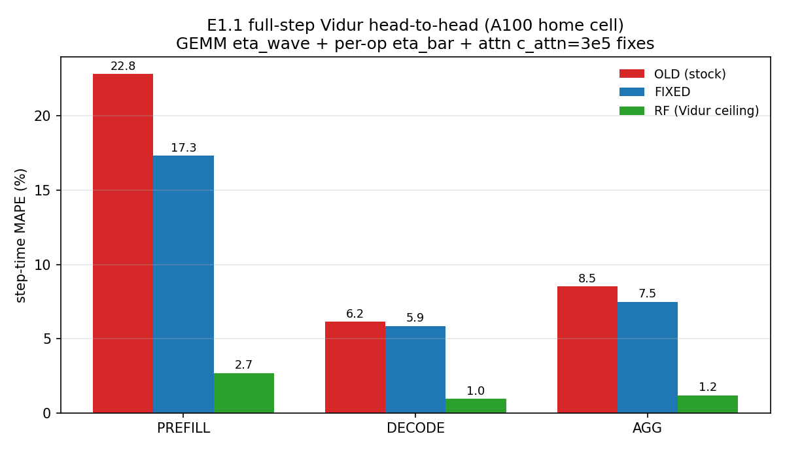
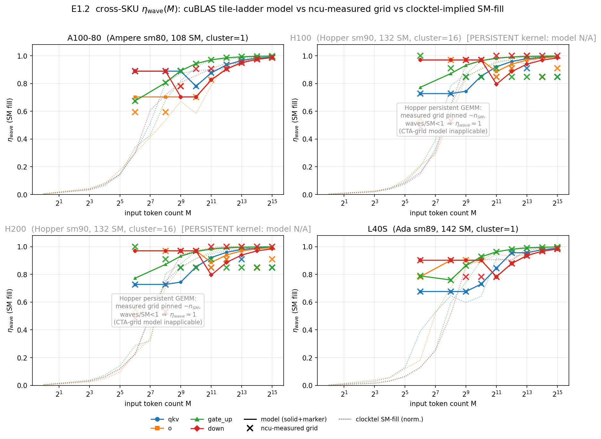
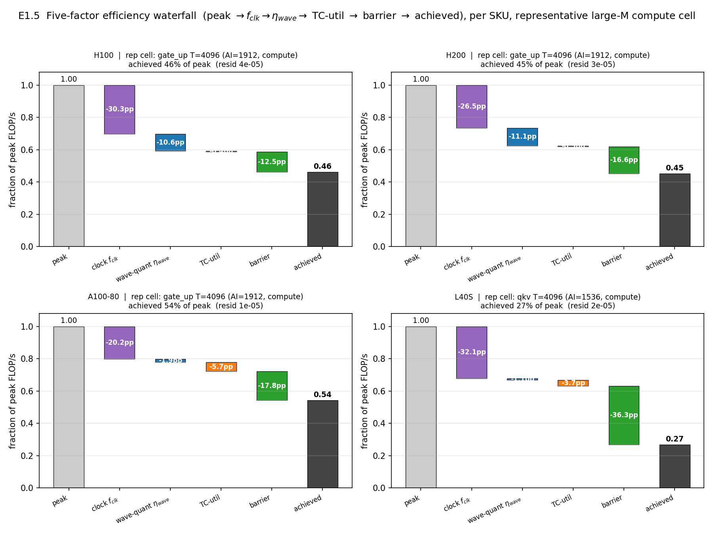
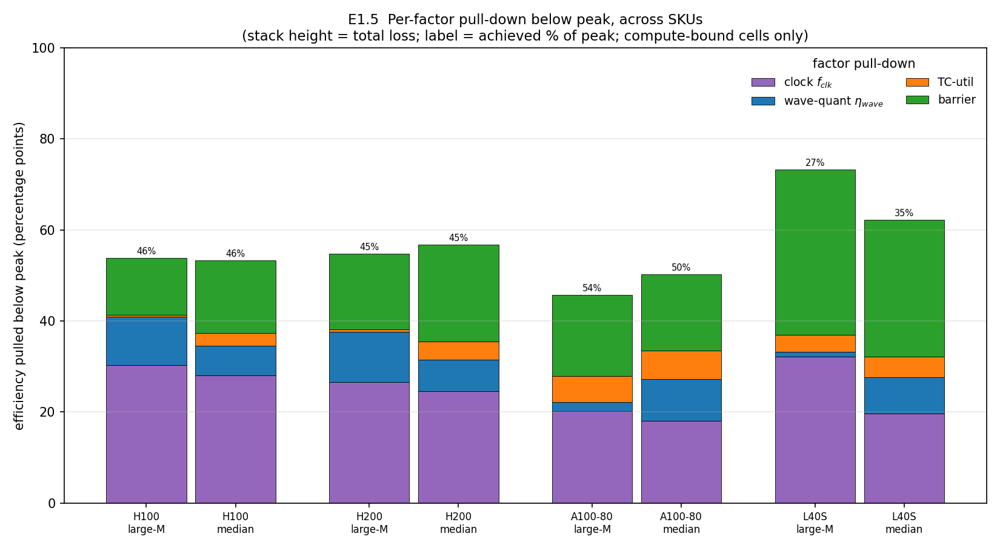

0. What this report is
The companion Core Review audited the project honestly and found that several headline claims were established only in isolation, on one GPU, or not at all. This page is the experiment campaign that closes those gaps.
The object under study is an analytical predictor that estimates per-step LLM inference time from model and hardware parameters alone, benchmarked against Vidur's per-operator Random-Forest predictor (RF) which memorizes a profiling table.
The five-factor efficiency model
Several experiments share one backbone: the achieved fraction of peak compute on a compute-bound GEMM is decomposed into independent multiplicative factors.
$\fclk$ is realized clock over boost, $\etawave$ is wave-quantization efficiency from the cuBLAS tile ladder, $\tcutil$ is the tensor-core ceiling, and barrier absorbs sync/idle.
Experiment map
The table below lists every experiment, the gap it closes, where it runs, and its status.
| Exp | Gap closed | Venue | Status / headline |
|---|---|---|---|
| E1.1 | Full-step prefill fixed only in isolation | Local | Prefill 22.83% → 17.34% (RF 2.70%) |
| E1.2 | $\etawave$ validated on A100 only | Local | Generalizes to non-persistent kernels; not Hopper |
| E1.5 | Per-factor contribution unquantified | Local | Chain closes; clock dominates on 3/4 SKUs |
| E2.2 | Decision quality GEMM-step only | Local | 4-way 100% top-1, 0 rows; Hopper-pairwise limited |
| L0.1 | Prior-art η-source matrix; missing-paper bib check | Local | 10-row matrix; 4 papers missing from bib; 3 models BLOCKED |
| L0.2 | Peak-only roofline needs hidden α on both terms? | Local | α<1 on both branches; memory CV 36.0%→6.7% (5.3×) |
| E1.3a | $\etamem$ L2-reuse fit (2-SKU local reduction of E1.3) | Local · 2-SKU | H100+A100-80 fit (MAPE 2.5%); H200/L40S BLOCKED |
| E1.4 | Realized overlap α from nsys spans (local reduction of E1.4) | Blocked | Span reduction BLOCKED; eager α=1 fallback MAPE 0.8–3.7% |
| E1.11 | Closed-form GPC-geometry cap for the Hopper grid | Local | Geometry cap matches ncu 35/36, 27/28 vs naive 12/36, 10/28 |
| E1.13 | Served scalar $\etabar$ vs five-factor SoT drift | Local | Served path is scalar; mean GEMM-time drift 44.8% (max 68.6%) |
| E1.20 | Are the predictor's corrections really just ~3 changes? | Local | 7 additive terms, not 3; η_mem(W) dominant (+13.4pp) |
| E1.22 | Per-cell error atlas (where is the predictor wrong?) | Local | Prefill+decode atlas; decode reproduces validated MAPE |
| E1.23 | Head-to-head vs prior analytical models | Local | Factored 1.4% vs roofline 40.6%; single scalar loses (honest negative) |
| E2.5 | Calibration-cost + coverage ledger | Local | Ours 0-row/4-SKU vs RF 44k-row/1-SKU; +3pp home MAPE |
| E2.6 | Fix the H100/H200 decision-tie artifact | Local | 100% was a tie artifact; tie-aware 92.3% 4-way, 53.8% pairwise |
| E1.3b | H200/L40S L2-reuse sweeps for the full 4-SKU collapse (E1.3a did 2 SKUs locally) | PACE | In-flight: L2 knee on remaining 2 SKUs |
| E1.18 | Re-collect nsys traces so E1.4's span-based α can be computed | PACE | In-flight: nsys span re-collect (E1.4 unblock) |
| E1.6 | Blackwell tight-cap lacks CI | PACE/lab | In-flight: n=5 Max-Q clocktel sweep |
| E2.1 | Cross-GPU transfer 2x2 missing | PACE | In-flight: Vidur profiler on H100/H200 |
| E2.3 | QLM live scheduler-in-loop unproven | PACE | In-flight: SLO-attainment head-to-head |
E1.1 — Full-step head-to-head with the fixes integratedLocal
Rationale
Prefill error had been reduced twice in isolation; the integrated full-step head-to-head had never been run, so the paper could not yet claim the corrected number.
Method
Three fixes were monkey-patched at runtime (source unedited) and the unmodified harness re-scored against the A100 profiled CSVs. Config D = per-op $\etabar$ × per-M $\etawave$, down gated off, $\cattn$ 2e5→3e5; memory branch untouched. RF is the home-cell table-memorizing ceiling.
Result
On n=18,601 cells, prefill MAPE drops 22.83% → 17.34% (−5.49pp, −24% relative); decode barely moves (6.16% → 5.86%, memory-bound); aggregate 8.53% → 7.49%.
The first figure shows {old, fixed, RF} MAPE; the second decomposes the prefill gain into a waterfall.


E1.2 — Does wave-quantization generalize across SKUs?Local
Rationale
The cuBLAS-tile $\etawave$ model was validated only on A100; a general claim needs it to reproduce H100/H200/L40S GEMM from each card's own dispatch tiles.
Method
For each SKU the A100 parser builds a per-op tile ladder, predicts the launch grid, validates against ncu launch__grid_size, and computes leave-one-out $\etawave$ error, cross-checked against clocktel SM-fill.
Result — a two-part finding
The mechanism generalizes to non-persistent kernels — A100-80 and L40S (LOO $\etawave$ MAPE 5.77% / 2.85%) — but not to Hopper, whose persistent sm90_xmma_gemm kernel pins the grid near the SM count, making $\etawave \approx 1$ by construction.
The first figure overlays predicted-vs-measured $\etawave$ for all four SKUs (Hopper greyed); the second shows LOO MAPE bars (Hopper hatched as a paradigm boundary).


E1.5 — The five-factor efficiency waterfallLocal
Rationale
A decomposition paper must quantify each factor's contribution; the raw per-cell data (39 compute cells, four SKUs) had never been turned into a clean per-SKU waterfall.
Method
Each compute cell is joined per-cell with the clocktel clock factor; the pinned-clock chain $\eta_{\text{meas}} = \etawave \cdot \tcutil \cdot \text{barrier}$ holds by construction and $\fclk$ is an independent multiplier (no double-counting).
Result
The pinned-clock chain closes exactly (max residual 7.9e-5 over 39 cells). Large-M cells land at 27–54% of peak; clock dominates on H100/H200/L40S (20–32pp), barrier dominates on L40S (36pp).
| SKU (large-M cell) | % of peak | clk | wave | tc | barrier |
|---|---|---|---|---|---|
| H100 gate_up / T4096 | 46% | 30.3 | 10.6 | 0.4 | 12.5 |
| H200 gate_up / T4096 | 45% | 26.5 | 11.1 | 0.5 | 16.6 |
| A100-80 gate_up / T4096 | 54% | 20.2 | 1.9 | 5.7 | 17.8 |
| L40S qkv / T4096 | 27% | 32.1 | 1.1 | 3.7 | 36.3 |
Pull-downs in points of peak. Median-cell: H100 47%, H200 43%, A100-80 50%, L40S 38%.


E2.2 — Decision quality: ranking SKUs from specs aloneLocal
Rationale
Part of the utility story is that a spec-only predictor can answer capacity-planning questions on unprofiled hardware, where RF cannot score. This re-confirms GEMM-step SKU selection and adds the harder H200-vs-H100 pairwise axis.
Method
Ground truth is n≥5 clocktel median TFLOPs over 13 token counts for four SKUs. The spec-only model (m2) ranks them from zero profiling rows; scored by top-1 and Spearman, plus a Hopper-pairwise call.
Result
On 4-way SKU selection m2 scores 100% top-1 and +1.00 Spearman from zero rows; RF covers only 1 of 4 SKUs. The H200-vs-H100 axis is mixed: m2 gets the small-M memory-bound direction 7/7 but cannot resolve the compute-bound crossover (identical datasheet peak → ties), so pairwise top-1 is 53.8%.
The first figure shows predicted-vs-telemetry ranking across token counts; the second contrasts decision accuracy against coverage.


In-flight on PACE — designed, not yet resultedIn-flight
The following five experiments require fresh GPU microbenchmarks and are dispatched to PACE. They are listed with full design but no results: nothing beyond this point is a measured number.
E1.3 — Deriving $\etamem$ from L2 capacityPACE
$\etamem$ is an empirical fit. Design: a PACE ncu working-set sweep across the L2 boundary per SKU, fitting $\etamem$ vs working-set/L2; if it does not collapse to a parameter law, keep the calibrated constant. Needs a new --set full ncu pass.
Planned figure: achieved-BW vs working-set/L2 with the capacity knee.
E1.4 — Overlap $\alpha$ on a pipelined enginePACE
$\alpha=1$ is the eager value; $\alpha_{\text{overlap}}=1-\text{shadow}/S$ is only a bound for pipelined engines. Design: vLLM with CUDA-graph/multi-step on, capture per-step wall vs GPU-visible time over a Poisson trace, compute realized $\alpha$ vs the bound.
Planned figure: realized $\alpha$ vs predicted bound across batch sizes.
E1.6 — Blackwell Max-Q n=5 clocktel sweepPACE/lab
The tight-cap Blackwell is the discriminator (throughput declines, not just clock droop). Design: n=5 randomized clocktel sweep on lab 5090/Blackwell with the existing CI harness, producing 95%-CI clock/power/TFLOPs-vs-M curves.
Planned figure: clock and TFLOPs vs M with 95% CI, overlaid on datacenter SKUs.
E2.1 — Cross-GPU RF-vs-ours transfer 2×2PACE
On an unseen GPU the A100-trained RF has no profile; the mechanism should hold. Design: run the Vidur profiler on H100/H200, then score a 2×2 of {RF, ours} × {home, unseen} via e2_crossgpu_transfer.py. Already dispatched.
Planned figure: 2×2 transfer heatmap; per-SKU RF-vs-ours MAPE bars.
E2.3 — QLM live SLO scheduler-in-loopPACE
Only an offline QLM head-to-head exists; the live-scheduler claim is unproven and version-walled on vLLM 0.6.6. Design: a dedicated QLM env, scheduler-in-loop with the predictor as QLM's RWT estimator vs native, over a matched-load Poisson trace, measuring SLO attainment / deadline-miss / p99 / goodput.
Planned figure: SLO-attainment vs load (ours vs native); deadline-miss CDF; p99 bars.